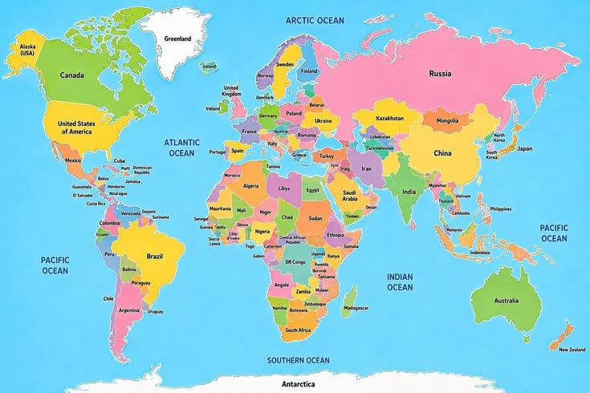

Travel
Hover over a pin or select it to see the place name and its photos. You can also arrange the markers to match the map.
Marker positions are saved in this browser.

Hover over a pin or select it to see the place name and its photos. You can also arrange the markers to match the map.
Marker positions are saved in this browser.
